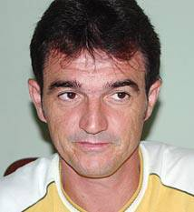

História | Jogadores | Página Inicial
- Jairo lenzi
- Roberto Cavalo
- Itá
Jairo Lenzi
Jairo Jair Lenzi, mais conhecido como Jairo Lenzi (Barra Velha, 22 de junho de 1968), é um ex-futebolista brasileiro que atuava como Ponta-esquerda. Índice
Carreira
Driblador, veloz e com um "chute venenoso", Jairo Lenzi começou em 1985, no Marcílio Dias, e quatro anos depois foi levado ao Criciúma por Levir Culpi. Devido às boas atuações na campanha do Criciúma na Libertadores de 1992, o técnico da seleção brasileira, Carlos Alberto Parreira, chegou a cogitar convocar o ponta em maio daquele ano, mas ele acabaria nunca tendo uma chance com a camisa amarela. Finda a participação na Libertadores, foi emprestado ao Grêmio e, em seguida, ao Internacional, mas não foi bem em nenhum dos dois clubes e voltou ao Criciúma antes do Campeonato Brasileiro de 1993.